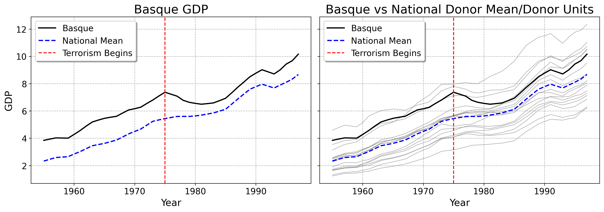
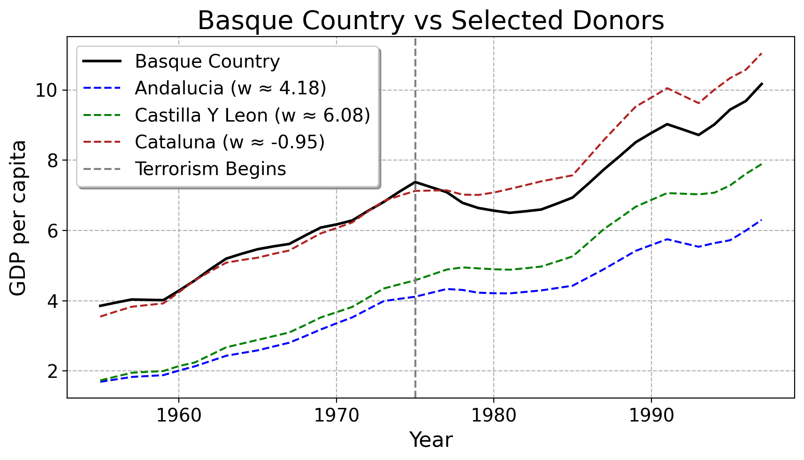

The Synthetic Control Method
2025-09-10
Synthetic Controls
This is the lecture on synthetic control methodologies (SCM). SCM is a quasi-experimental method we can use to estimate the causal impact of policies, marketing campaigns, or other treatments we care about.
What Is An Average?
Before we cover SCM, we need to be very clear about what an average is.
- With a finite set of scalars \(S = \{x_1, x_2, \dots, x_n\} \subset \mathbb{R}\), the arithmetic mean is:
\[ \bar{x} = \frac{1}{n} \sum_{x \in S} x = \tfrac{x_1 + x_2 + \cdots + x_n}{n}. \]
- For example, say you have 12 apples and your friend has 18. This can be called set \(A = \{12, 18\} \subset \mathbb{R}\):
\[ 15 = \bar{x} = \frac{1}{2} \sum_{x \in \{12,18\}} x = (\tfrac{1}{2} \cdot 12) + (\tfrac{1}{2} \cdot 18) = \frac{12 + 18}{2}. \]
On average, you have 15 apples.
- We can write the same example as a row vector:
\[ \mathbf{x} = \begin{bmatrix} 12 & 18 \end{bmatrix} \in \mathbb{R}^{1 \times 2}, \]
where we have one row, and each column entry corresponds to a person’s apples.
- The weights are 1 divided by the number of people. Since it’s just you and your friend, you both get the same weight:
\[ \mathbf{w} = \begin{bmatrix} \frac{1}{2} \\ \frac{1}{2} \end{bmatrix} \in \mathbb{R}^{2 \times 1}. \]
- Then, we multiply each value in the column by its corresponding weight (1/2). Summing these products gives a single number, the average number of apples:
\[ \bar{x} = \mathbf{x}\mathbf{w} = \begin{bmatrix} 12 & 18 \end{bmatrix} \begin{bmatrix} \tfrac{1}{2} \\[6pt] \tfrac{1}{2} \end{bmatrix} = \begin{bmatrix} 12 \cdot \tfrac{1}{2} & \; 18 \cdot \tfrac{1}{2} \end{bmatrix} = 6 + 9 = 15. \]
See? We still have 15 apples, on average.
- Let’s extend this idea to multiple time periods. Suppose today you have 12 apples and tomorrow 30, and your friend has 18 today and 22 tomorrow. We can organize this into a matrix, where each row is a time period and each column is a person:
\[ \mathbf{Y} = \begin{bmatrix} 12 & 18 \\ 30 & 22 \end{bmatrix} \in \mathbb{R}^{2 \times 2}. \]
- Now we want the average number of apples per time period. Using the same column weights as before (1/2 for each person), we multiply each row by the weights and sum:
\[ \bar{\mathbf{x}} = \mathbf{Y} \mathbf{w} = \begin{bmatrix} 12 & 18 \\ 30 & 22 \end{bmatrix} \begin{bmatrix} 1/2 \\ 1/2 \end{bmatrix} = \begin{bmatrix} 12\cdot 1/2 + 18\cdot 1/2 \\ 30\cdot 1/2 + 22\cdot 1/2 \end{bmatrix} = \begin{bmatrix} 15 \\ 26 \end{bmatrix}. \]
- So on average, you and your friend have 15 apples today and 26 apples tomorrow.
- This idea generalizes to any data measured over time, like GDPs, incomes, or other outcomes.
What Are We Weighting For? Introducing Weighted Averages
You are at a bar with your friend. You earn $60k/year. Your friend earns $70k/year. The simple average of your incomes is:
\[ \mathbf{x} = \begin{bmatrix} 60 & 70 \end{bmatrix}, \quad \mathbf{w} = \begin{bmatrix} \frac{1}{2} \\[1mm] \frac{1}{2} \end{bmatrix} \]
\[ \bar{x} = \mathbf{x} \mathbf{w} = \begin{bmatrix} 60 & 70 \end{bmatrix} \begin{bmatrix} \frac{1}{2} \\[1mm] \frac{1}{2} \end{bmatrix} = \frac{1}{2}\cdot 60 + \frac{1}{2}\cdot 70 = 65 \text{ (k/year)} \]
Now, suddenly Bill Gates walks in, with a net worth of $107B/year. Taking the simple average of all three income levels:
\[ \mathbf{x} = \begin{bmatrix} 60 & 70 & 1.07\times 10^{11} \end{bmatrix}, \quad \mathbf{w} = \begin{bmatrix} \frac{1}{3} \\[1mm] \frac{1}{3} \\[1mm] \frac{1}{3} \end{bmatrix} \]
\[ \bar{x} = \mathbf{x} \mathbf{w} = \frac{1}{3}\cdot 60 + \frac{1}{3}\cdot 70 + \frac{1}{3}\cdot 1.07\times 10^{11} \approx 35.7 \text{ billion/year} \]
Clearly, treating Bill Gates the same as the others skews the average.
If the bartender next day bragged about earning 50k that night, we’d say: “It’s not that you earned 50k organically; a wealthy dude happened to be there that night. We can’t use this as evidence that your business is booming.”
In other words, if we want a meaningful “bar average,” Bill should likely get much less weight than the other patrons.
Instead of treating Bill as equal to you two, we can give each person a weight (w_i) to decide how much they count in the average. This is exactly the fraction we used before:
\[ \bar{x}_{\text{weighted}} = \sum_{i=1}^{n} w_i x_i, \quad \sum_{i=1}^{n} w_i = 1. \]
Here, we compute a weighted average where Bill can get a tiny weight, and you and your friend get larger weights, giving a more reasonable “average bar income.”
Suppose we only care about you and your friend, and ignore Bill Gates (weight = 0):
\[ \mathbf{x} = \begin{bmatrix} 60 & 70 & 1.07\times 10^{11} \end{bmatrix}, \quad \mathbf{w} = \begin{bmatrix} \mathbf{0.5} \\[1mm] \mathbf{0.5} \\[1mm] \mathbf{0} \end{bmatrix} \]
Then the weighted average is:
\[ \bar{x} = \mathbf{x} \mathbf{w} = 0.5\cdot 60 + 0.5\cdot 70 + 0 \cdot 1.07\times 10^{11} = 65 \text{ (k/year)} \]
See how the average is as it was at first when it was just you and your friend? Bill is clearly not representative of a bar or even a country. Giving him as much weight as regular humans does not make sense.
How to Choose the Weights?
The issue with the previous examples is that the weights we used were arbitrary. There’s no reason you and your friend must each get 0.5; maybe one of you should get 0.1 and the other 0.9. In real life, weights are usually unknown. To use weighted averages for estimating policy impacts, we need a formal method.
Suppose we have one unit exposed to terrorism in 1975 (the Basque Country), and a set of 16 other units that are not exposed. We want to estimate the effect of terrorism on GDP per capita.
Using data on GDPs over the pre- and post-intervention periods, we aim to estimate the counterfactual for the Basque Country as a weighted average of 16 control units. Below we plot the Basque Country’s GDP, and the control/donor regions.
Using Least Squares
But how do we know how much weight a unit should get? One approach is linear regression. In multiple regression, the coefficients returned to us can be interpreted as weights for our control group.
- \(\mathbf{y}_1 \in \mathbb{R}^{T}\): column vector of outcomes (GDP per capita) for the treated unit (Basque Country) over \(T\) time periods
- \(\mathbf{Y}_0 \in \mathbb{R}^{T \times J}\): donor matrix; each column is a control unit, each row is a time period (\(J=16\) control units)
- \(\mathbf{w} \in \mathbb{R}^{J}\): vector of weights indicating how much each control unit contributes to the weighted average version of the Basque Country
Reminder: a weighted average can be written as
\[ \hat{y}_1 = \mathbf{Y}_0 \mathbf{w} = w_1 y_{1} + w_2 y_{2} + \dots + w_J y_{J} \]
Here is the dataset, literally displayed in preparation for regression
| year | Andalucia | Aragon | Baleares (Islas) | Basque | Canarias | Cantabria | Castilla Y Leon | Castilla-La Mancha | Cataluna | Comunidad Valenciana |
|---|---|---|---|---|---|---|---|---|---|---|
| 1955 | 1.68873 | 2.28877 | 3.14396 | 3.85318 | 1.91438 | 2.55941 | 1.72915 | 1.32776 | 3.54663 | 2.57598 |
| 1956 | 1.7585 | 2.44516 | 3.34776 | 3.94566 | 2.07184 | 2.69387 | 1.83833 | 1.4151 | 3.69045 | 2.7385 |
| 1957 | 1.82762 | 2.6034 | 3.54963 | 4.03356 | 2.22608 | 2.82034 | 1.94766 | 1.50357 | 3.82683 | 2.89989 |
| 1958 | 1.85276 | 2.63903 | 3.64267 | 4.02342 | 2.22087 | 2.87903 | 1.97137 | 1.53142 | 3.87568 | 2.96351 |
| 1959 | 1.87803 | 2.67709 | 3.73486 | 4.01378 | 2.21344 | 2.94373 | 1.99514 | 1.55934 | 3.92174 | 3.02621 |
| 1960 | 2.01014 | 2.88146 | 4.05884 | 4.28592 | 2.35768 | 3.13703 | 2.13882 | 1.66752 | 4.24179 | 3.21929 |
| 1961 | 2.12918 | 3.09954 | 4.36025 | 4.57434 | 2.44573 | 3.32762 | 2.2395 | 1.75243 | 4.57534 | 3.36247 |
| 1962 | 2.28035 | 3.35918 | 4.64617 | 4.89896 | 2.64824 | 3.55534 | 2.45423 | 1.92045 | 4.83805 | 3.56998 |
| 1963 | 2.43102 | 3.61418 | 4.91153 | 5.19701 | 2.84476 | 3.77142 | 2.67224 | 2.0919 | 5.08133 | 3.76521 |
| 1964 | 2.50885 | 3.68009 | 5.0507 | 5.3389 | 2.95116 | 3.8394 | 2.77778 | 2.18259 | 5.1581 | 3.82369 |
- We can choose weights to minimize the pre-intervention difference between Basque and the weighted donors:
\[ \mathbf{w}^{\ast} = \underset{\mathbf{w} \in \mathbb{R}^J}{\operatorname*{argmin}} \; \| \mathbf{y}_1 - \mathbf{Y}_0 \mathbf{w} \|_2^2 \]
- In practice, this is just OLS on the pre-1975 period, where \(\mathbf{y}_1\) is the Basque GDP column and \(\mathbf{Y}_0\) are the columns for the donor pool. The regression coefficients are the weights.
- Once we have \(\mathbf{w}^{\ast}\), we compute the weighted average of controls:
\[ \hat{y}_1 = \mathbf{Y}_0 \mathbf{w}^{\ast} = w_1 y_{1} + w_2 y_{2} + \dots + w_J y_{J} \]
That is: multiply all the values for each control unit by its regression coefficient and sum across donors.
This gives the predicted Basque trajectory pre- and post-intervention.
- The average treatment effect on the treated (ATT) can be expressed as the mean difference between observed outcomes and the weighted average in the post-intervention period:
\[ \text{ATT} = \frac{1}{T - T_0} \sum_{t=T_0+1}^{T} \left( y_{1t} - \hat{y}_{1t} \right) \]
- \(T_0\): last pre-intervention period
- \(y_{1t}\): observed outcome of the treated unit at time \(t\)
- \(\hat{y}_{1t}\): OLS prediction at time \(t\)
Intuition: ATT measures how much Basque GDP deviates from the OLS prediction after terrorism began.
Least Squares Cont.
Here are the weights OLS returns to us for the 16 donor units:
| regionname | Weight |
|---|---|
| Andalucia | 4.17551 |
| Aragon | -1.50358 |
| Baleares (Islas) | -0.0107201 |
| Canarias | -0.0168126 |
| Cantabria | 0.261694 |
| Castilla Y Leon | 6.07601 |
| Castilla-La Mancha | -2.6561 |
| Cataluna | -0.945626 |
| Comunidad Valenciana | 0.860017 |
| Extremadura | -1.93895 |
| Galicia | -2.96441 |
| Madrid (Comunidad De) | 0.343366 |
| Murcia (Region de) | -0.620705 |
| Navarra (Comunidad Foral De) | 0.583705 |
| Principado De Asturias | 0.51578 |
| Rioja (La) | -0.94721 |
Notice that OLS assigns some positive and some negative weights. Negative weights can be hard to interpret substantively, and it’s unclear which donors really matter most.
Here is our prediction using OLS. Unfortunately, while OLS fits very well to the Basque Country before terrorism happened, it has a weird zig-zag-y prediction after the treatment happens. We can see that the prediction line for the Basque country suggests that its economy would have fallen off a cliff, had terrorism not happened. In other words, if the OLS estmate is to be taken seriously, terrorism was great for business to the tune of 1500 dollars per person… This does not seem like a sensible finding substantively, or a very reasonable prediciton.

How To Change The Weights
What if we could adjust the weights so the synthetic Basque stays within the range of the donor units?
In other words, we want the model predictions to lie inside the full range of the donors only.
The plot below shows the area spanned by all donor regions in Spain (shaded), along with the Basque Country. This visualizes the full feasible range for any weighted average of donors.

Classic Synthetic Control Model
The classic SCM estimator solves the following ordinary least-squares regression problem:
\[ \begin{aligned} \mathbf{w}^{\mathrm{SCM}} &= \underset{\mathbf{w}^{\mathrm{SCM}} \in \mathcal{W}_{\mathrm{conv}}}{\operatorname*{argmin}} \; \left\| \mathbf{y}_1 - \mathbf{Y}_0 \mathbf{w}^{\mathrm{SCM}} \right\|_2^2, \\ \mathcal{W}_{\mathrm{conv}} &= \left\{ \mathbf{w}^{\mathrm{SCM}} \in \mathbb{R}_{\ge 0}^{J} \;\middle|\; \mathbf{1}^\top \mathbf{w} = 1 \right\} \end{aligned} \]
We are looking for the weight vector \(\mathbf{w}^{\mathrm{SCM}}\) that best fits the treated unit’s pre-treatment outcomes with a weighted average of donors. The nonnegativity and summation to one constraints, known as the “simplex”, mean the synthetic control must lie inside the support of the donor pool.
SCM for Basque
Here is the result of the regression model. The Basque Country is best reproduced by 85% Catalonia and 15% Madrid.
The plot below shows how the prediction itself and the pre-treatment Root Mean Squared Error changes given a change in the unit weights that were selected.
These are just iterations of weighted averages converging to the optimal point where the model’s error in the pre-treatment period is minimized.
Convex Combination